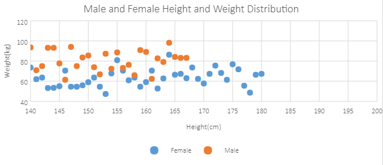
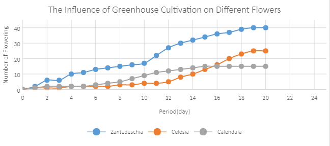
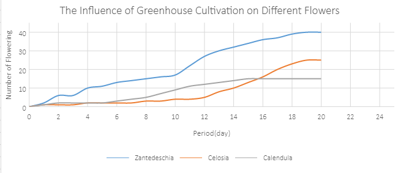
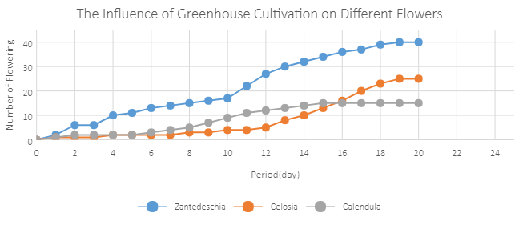
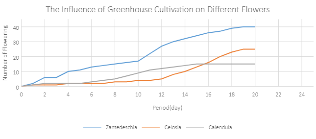
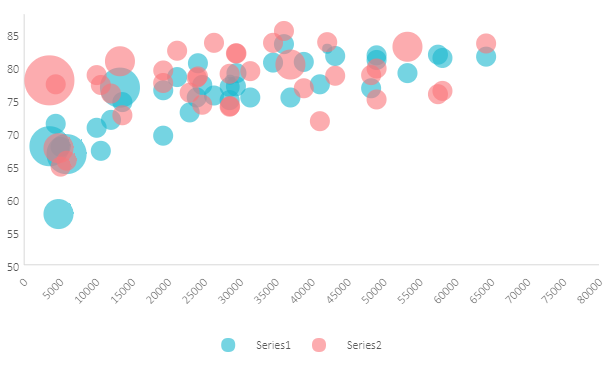

An Scatter chart is extensively used to illustrate relationships between individual items or categories. This chart is ideal for showing comparisons for scientific, statistical and engineering data.
The data arranged in columns or rows of a worksheet can be plotted in a Scatter chart. Unlike other charts, a scatter chart displays the actual values of the x and y variables in horizontal axis (also called X axis) and vertical axis (also called Y axis) respectively in the plot area. Typically, this chart combines the x and y values into single data points and displays them at irregular intervals. Also, this chart does not make use of the category axis because both horizontal axis (primary axis) and vertical axes (secondary axis) are value axes.
SpreadJS supports the following types of Scatter charts. In the examples shown below, the height and weight distribution of a number of males and females are depicted with the help of different types of scatter charts.
A clustered Scatter chart displays the data points based on a selected data range. This can help users to analyse and determine the relationship between x and y variables.
An image of a scatter chart is shown below:

A scatter chart with smooth lines and markers displays a smooth curve that connects all the data points in a particular series.
An image of a scatter chart with smooth line and markers is shown below:

A scatter chart with smooth lines displays a smooth curve that connects all the data points in a particular series without displaying the individual points.
An image of a Scatter chart with smooth lines is shown below:

A scatter chart with straight lines and markers displays a straight line that connects all the data points in a particular series.
An image of a Scatter chart with straight lines and markers is shown below:

A scatter chart with straight lines displays a straight connecting line between data points in a particular series without showing the individual points.
An image of a Scatter chart with straight lines is shown below:

A bubble chart is ideal for financial data analysis. It displays the variations of a scatter chart where data points are replaced with bubbles and a third dimension is represented (Z axis) in the size of the bubbles. This chart plots z(size) values as well as x values and y values. Typically, this chart can be used when you want to plot three data series. The size of the bubbles is determined by the values in the third data series.
An image of a bubble chart is shown below:

This code shows how to add different types of scatter charts in a spreadsheet.
| JavaScript |
Copy Code
|
|---|---|
Click here to see code var scatterDataArray = []; var scatterWithLineDataArray = dataArray = [["Period", "Zantedeschia", "Celosia", "Calendula"], [0, 0, 0, 0], [1, 2, 1, 1], [2, 6, 1, 2], [3, 6, 1, 2], [4, 10, 2, 2], [5, 11, 2, 2], [6, 13, 2, 3], [7, 14, 2, 4], [8, 15, 3, 5], [9, 16, 3, 7], [10, 17, 4, 9], [11, 22, 4, 11], [12, 27, 5, 12], [13, 30, 8, 13], [14, 32, 10, 14], [15, 34, 13, 15], [16, 36, 16, 15], [17, 37, 20, 15], [18, 39, 23, 15], [19, 40, 25, 15], [20, 40, 25, 15]]; function initSpread(spread) { var chartType = [{ type: GC.Spread.Sheets.Charts.ChartType.xyScatterSmoothNoMarkers, desc: "xyScatterSmoothNoMarkers", }, { type: GC.Spread.Sheets.Charts.ChartType.xyScatterSmooth, desc: "xyScatterSmooth", }, { type: GC.Spread.Sheets.Charts.ChartType.xyScatterLinesNoMarkers, desc: "xyScatterLinesNoMarkers", }, { type: GC.Spread.Sheets.Charts.ChartType.xyScatterLines, desc: "xyScatterLines", }]; var sheets = SpreadJS; spread.suspendPaint(); initXYScatterSheet(sheets[0]); initXYScatterChart(sheets[0]); for (var i = 0; i < chartType.length; i++) { var sheet = sheets[i + 1]; initSheet(sheet, chartType[i].desc); initChart(sheet, chartType[i].type);//add chart } initBubbleSheet(sheets[sheets.length - 1]); initBubbleChart(sheets[sheets.length - 1]); spread.options.tabStripRatio = 0.8; spread.resumePaint(); } function initSheet(sheet, sheetName) { sheet.name(sheetName); //prepare data for chart var dataArray = [["Period", "Zantedeschia", "Celosia", "Calendula"], [0, 0, 0, 0], [1, 2, 1, 1], [2, 6, 1, 2], [3, 6, 1, 2], [4, 10, 2, 2], [5, 11, 2, 2], [6, 13, 2, 3], [7, 14, 2, 4], [8, 15, 3, 5], [9, 16, 3, 7], [10, 17, 4, 9], [11, 22, 4, 11], [12, 27, 5, 12], [13, 30, 8, 13], [14, 32, 10, 14], [15, 34, 13, 15], [16, 36, 16, 15], [17, 37, 20, 15], [18, 39, 23, 15], [19, 40, 25, 15], [20, 40, 25, 15]]; sheet.setArray(0, 0, dataArray); } function initChart(sheet, chartType) { //add chart var chart = sheet.charts.add((sheet.name() + 'Chart1'), chartType, 280, 0, 650, 290, "A1:D22", GC.Spread.Sheets.Charts.RowCol.columns); changeGridLines(chart); chart.title({ text: "The Influence of Greenhouse Cultivation on Different Flowers" }); } // show gridLines function changeGridLines(chart) { var gridLinesAxes = chart.axes(); gridLinesAxes.primaryCategory.majorGridLine.visible = true; gridLinesAxes.primaryCategory.title.text = "Period(day)"; gridLinesAxes.primaryValue.title.text = "Number of Flowering"; chart.axes(gridLinesAxes); } // show gridLines function changeXYScatterChartGridLines(chart) { var axes = chart.axes(); axes.primaryCategory.majorGridLine.visible = true; axes.primaryCategory.min = 140; axes.primaryCategory.max = 200; axes.primaryCategory.title.text = "Height(cm)"; axes.primaryValue.min = 40; axes.primaryValue.max = 120; axes.primaryValue.title.text = "Weight(kg)"; chart.axes(axes); } function addSeries(chart, chartType) { var series1 = {}, series2 = {}; series1.name = "A1"; series1.xValues = "A3:A200"; series1.yValues = "B3:B200"; series1.chartType = chartType; series1.axisGroup = GC.Spread.Sheets.Charts.AxisGroup.primary; chart.series().add(series1); series2.name = "C1"; series2.xValues = "C3:C200"; series2.yValues = "D3:D200"; series2.chartType = chartType; series2.axisGroup = GC.Spread.Sheets.Charts.AxisGroup.primary; chart.series().add(series2); } function initXYScatterSheet(sheet) { sheet.name("xyScatter"); var femaleDataArray = [["Female", ""], ["Height", "Weight"], [161.2, 51.6], [167.5, 59.0], [159.5, 49.2], [157.0, 63.0], [155.8, 53.6], [170.0, 59.0], [159.1, 47.6], [166.0, 69.8], [176.2, 66.8], [160.2, 75.2], [172.5, 55.2], [170.9, 54.2], [172.9, 62.5], [153.4, 42.0], [160.0, 50.0], [147.2, 49.8], [168.2, 49.2], [175.0, 73.2], [157.0, 47.8], [167.6, 68.8], [167.6, 61.0], [160.7, 69.1], [163.2, 55.9], [152.4, 46.5], [157.5, 54.3], [168.3, 54.8], [180.3, 60.7], [165.5, 60.0], [165.0, 62.0], [164.5, 60.3], [156.0, 52.7], [160.0, 74.3], [163.0, 62.0], [165.7, 73.1], [161.0, 80.0], [162.0, 54.7], [166.0, 53.2], [174.0, 75.7], [172.7, 61.1], [167.6, 55.7], [151.1, 48.7], [164.5, 52.3], [163.5, 50.0], [152.0, 59.3], [169.0, 62.5], [164.0, 55.7], [161.2, 54.8], [155.0, 45.9], [170.0, 70.6], [176.2, 67.2], [170.0, 69.4], [162.5, 58.2], [170.3, 64.8], [164.1, 71.6], [169.5, 52.8], [163.2, 59.8], [154.5, 49.0], [159.8, 50.0], [173.2, 69.2], [170.0, 55.9], [161.4, 63.4], [169.0, 58.2], [166.2, 58.6], [159.4, 45.7], [162.5, 52.2], [159.0, 48.6], [162.8, 57.8], [159.0, 55.6], [179.8, 66.8], [162.9, 59.4], [161.0, 53.6], [151.1, 73.2], [168.2, 53.4], [168.9, 69.0], [173.2, 58.4], [171.8, 56.2], [178.0, 70.6], [164.3, 59.8], [163.0, 72.0], [168.5, 65.2], [166.8, 56.6], [172.7, 105.2], [163.5, 51.8], [169.4, 63.4], [167.8, 59.0], [159.5, 47.6], [167.6, 63.0], [161.2, 55.2], [160.0, 45.0], [163.2, 54.0], [170.5, 64.5], [159.2, 51.8], [157.5, 56.0], [161.3, 63.6], [162.6, 63.2], [160.0, 59.5], [168.9, 56.8], [165.1, 64.1], [162.6, 50.0], [165.1, 72.3], [166.4, 55.0], [160.0, 55.9], [152.4, 60.4], [170.2, 69.1], [162.6, 84.5], [170.2, 55.9], [158.8, 55.5], [172.7, 69.5], [167.6, 76.4], [162.6, 61.4], [167.6, 65.9], [156.2, 58.6], [175.2, 66.8], [172.1, 56.6], [162.6, 58.6], [160.0, 55.9], [165.1, 59.1], [182.9, 81.8], [166.4, 70.7], [165.1, 56.8], [177.8, 60.0], [165.1, 58.2], [175.3, 72.7], [154.9, 54.1], [158.8, 49.1], [172.7, 75.9], [168.9, 55.0], [161.3, 57.3], [167.6, 55.0], [165.1, 65.5], [175.3, 65.5], [157.5, 48.6], [163.8, 58.6], [167.6, 63.6], [165.1, 55.2], [165.1, 62.7], [168.9, 56.6], [162.6, 53.9], [164.5, 63.2], [176.5, 73.6], [168.9, 62.0], [175.3, 63.6], [159.4, 53.2], [160.0, 53.4], [170.2, 55.0], [162.6, 70.5], [167.6, 54.5], [162.6, 54.5], [160.7, 55.9], [160.0, 59.0], [157.5, 63.6], [162.6, 54.5], [152.4, 47.3], [170.2, 67.7], [165.1, 80.9], [172.7, 70.5], [165.1, 60.9], [170.2, 63.6], [170.2, 54.5], [170.2, 59.1], [161.3, 70.5], [167.6, 52.7], [167.6, 62.7], [165.1, 86.3], [162.6, 66.4], [152.4, 67.3], [168.9, 63.0], [170.2, 73.6], [175.2, 62.3], [175.2, 57.7], [169.5, 67.3], [160.0, 75.5], [172.7, 68.2], [162.6, 61.4], [157.5, 76.8], [176.5, 71.8], [164.4, 55.5], [160.7, 48.6], [174.0, 66.4], [163.8, 67.3]]; sheet.setArray(0, 0, femaleDataArray); var maleDataArray = [["Male", ""], ["Height", "Weight"], [174.0, 65.6], [175.3, 71.8], [193.5, 80.7], [186.5, 72.6], [187.2, 78.8], [181.5, 74.8], [184.0, 86.4], [184.5, 78.4], [175.0, 62.0], [184.0, 81.6], [180.0, 76.6], [177.8, 83.6], [192.0, 90.0], [176.0, 74.6], [174.0, 71.0], [184.0, 79.6], [192.7, 93.8], [171.5, 70.0], [173.0, 72.4], [176.0, 85.9], [169.5, 75.6], [174.0, 86.2], [172.7, 75.3], [182.2, 87.1], [164.1, 55.2], [163.0, 57.0], [171.5, 61.4], [184.2, 76.8], [174.0, 86.8], [174.0, 72.2], [177.0, 71.6], [186.0, 84.8], [167.0, 68.2], [171.8, 66.1], [182.0, 72.0], [167.0, 64.6], [177.8, 74.8], [164.5, 70.0], [192.0, 101.6], [175.5, 63.2], [171.2, 79.1], [181.6, 78.9], [167.4, 67.7], [181.1, 66.0], [177.0, 68.2], [174.5, 63.9], [177.5, 72.0], [170.5, 56.8], [182.4, 74.5], [197.1, 90.9], [180.1, 93.0], [175.5, 80.9], [180.6, 72.7], [184.4, 68.0], [175.5, 70.9], [180.6, 72.5], [177.0, 72.5], [177.1, 83.4], [181.6, 75.5], [176.5, 73.0], [175.0, 70.2], [174.0, 73.4], [165.1, 70.5], [177.0, 68.9], [192.0, 102.3], [176.5, 68.4], [169.4, 65.9], [182.1, 75.7], [179.8, 84.5], [175.3, 87.7], [184.9, 86.4], [177.3, 73.2], [167.4, 53.9], [178.1, 72.0], [168.9, 55.5], [157.2, 58.4], [180.3, 83.2], [170.2, 72.7], [177.8, 64.1], [172.7, 72.3], [165.1, 65.0], [186.7, 86.4], [165.1, 65.0], [174.0, 88.6], [175.3, 84.1], [185.4, 66.8], [177.8, 75.5], [180.3, 93.2], [180.3, 82.7], [177.8, 58.0], [177.8, 79.5], [177.8, 78.6], [177.8, 71.8], [177.8, 116.4], [163.8, 72.2], [172.7, 76.8], [177.8, 63.6], [177.8, 80.9], [182.9, 80.9], [170.2, 85.5], [167.6, 68.6], [175.3, 67.7], [165.1, 66.4], [185.4, 102.3], [181.6, 70.5], [172.7, 95.9], [190.5, 84.1], [179.1, 87.3], [175.3, 71.8], [170.2, 65.9], [193.0, 95.9], [171.4, 91.4], [177.8, 81.8], [177.8, 96.8], [167.6, 69.1], [167.6, 82.7], [180.3, 75.5], [182.9, 79.5], [176.5, 73.6], [186.7, 91.8], [188.0, 84.1], [188.0, 85.9], [177.8, 81.8], [174.0, 82.5], [177.8, 80.5], [171.4, 70.0], [185.4, 81.8], [185.4, 84.1], [188.0, 90.5], [188.0, 91.4], [182.9, 89.1], [176.5, 85.0], [175.3, 69.1], [175.3, 73.6], [188.0, 80.5], [188.0, 82.7], [175.3, 86.4], [170.5, 67.7], [179.1, 92.7], [177.8, 93.6], [175.3, 70.9], [182.9, 75.0], [170.8, 93.2], [188.0, 93.2], [180.3, 77.7], [177.8, 61.4], [185.4, 94.1], [168.9, 75.0], [185.4, 83.6], [180.3, 85.5], [174.0, 73.9], [167.6, 66.8], [182.9, 87.3], [160.0, 72.3], [180.3, 88.6], [180.3, 73.2], [167.6, 76.3], [183.0, 65.9], [183.0, 90.9], [179.1, 89.1], [170.2, 62.3], [177.8, 82.7], [179.1, 79.1], [190.5, 98.2], [177.8, 84.1], [180.3, 83.2], [180.3, 83.2]]; sheet.setArray(0, 2, maleDataArray); } function initXYScatterChart(sheet) { var chartType = GC.Spread.Sheets.Charts.ChartType.xyScatter; //add chart var chart = sheet.charts.add((sheet.name() + 'Chart1'), chartType, 280, 0, 650, 290, null); addSeries(chart, chartType); changeXYScatterChartGridLines(chart); chart.title({ text: "Male and Female Height and Weight Distribution" }); } function initBubbleSheet(sheet) { sheet.name('Bubble'); //prepare data for chart var dataArray = [ [28604, 77, 17096869, 74, 67096869], [41163, 77.4, 27662440, 71.8, 47662440], [3516, 68, 1154605773, 78, 1654605773], [13670, 74.7, 10582082, 72.7, 69582082], [28599, 75, 4986705, 79, 1986705], [29476, 77.1, 56943299, 82.1, 26943299], [31476, 75.4, 78958237, 79.4, 98958237], [28666, 78.1, 254830, 74.1, 954830], [4777, 57.7, 870601776, 67.7, 570601776], [29550, 79.1, 122249285, 82.1, 22249285], [5076, 67.9, 20194354, 64.9, 40194354], [12087, 72, 42972254, 76, 342972254], [24021, 75.4, 3397534, 78.4, 1397534], [48296, 76.8, 4240375, 78.8, 14240375], [10088, 70.8, 38195258, 78.8, 18195258], [19349, 69.6, 147568552, 77.6, 234568552], [10670, 67.3, 53994605, 77.3, 83994605], [26424, 75.7, 57110117, 83.7, 86110117], [37062, 75.4, 252847810, 80.4, 652847810], [49056, 81.8, 23968973, 79.8, 63968973], [43294, 81.7, 35939927, 78.7, 15939927], [13334, 76.9, 1376048943, 80.9, 976048943], [21291, 78.5, 11389562, 82.5, 151389562], [38923, 80.8, 5503457, 76.8, 1503457], [57599, 81.9, 64395345, 75.9, 34395345], [49053, 81.1, 80688545, 75.1, 20688545], [42182, 82.8, 329425, 83.8, 1329425], [5903, 66.8, 1311050527, 65.8, 311050527], [36162, 83.5, 126573481, 85.5, 326573481], [4390, 71.4, 25155317, 77.4, 55155317], [34644, 80.7, 50293439, 83.7, 20293439], [24186, 80.6, 4528526, 78.6, 13528526], [64304, 81.6, 5210967, 83.6, 3210967], [24787, 77.3, 38611794, 74.3, 88611794], [23038, 73.13, 143456918, 76.13, 83456918], [19360, 76.5, 78665830, 79.5, 58665830], [58225, 81.4, 64715810, 76.4, 84715810], [53354, 79.1, 321773631, 83.1, 721773631] ]; sheet.setArray(0, 0, dataArray); } function initBubbleChart(sheet) { var chart = sheet.charts.add('BubbleChart1', GC.Spread.Sheets.Charts.ChartType.bubble, 280, 0, 620, 400, "A1:E38", GC.Spread.Sheets.Charts.RowCol.columns); changeBubbleGridLines(chart); changeBubbleBackColor(chart); changePrimaryCategoryMin(chart); } // hide bubble gridLines function changeBubbleGridLines(chart) { var gridLinesAxes = chart.axes(); gridLinesAxes.primaryCategory.majorGridLine.visible = false; gridLinesAxes.primaryValue.majorGridLine.visible = false; chart.axes(gridLinesAxes); } //change bubble backColor function changeBubbleBackColor(chart) { var series = chart.series().get(); var seriesColors = ['rgba(25, 183, 207, 0.6)', 'rgba(251, 118, 123, 0.6)'] for (var i = 0; i < series.length; i++) { var seriesItem = series[i]; seriesItem.backColor = seriesColors[i]; chart.series().set(i, seriesItem); } } // change primary min num function changePrimaryCategoryMin(chart) { var gridLinesAxes = chart.axes(); gridLinesAxes.primaryValue.min = 50; gridLinesAxes.primaryValue.max = 88; chart.axes(gridLinesAxes); } |
|